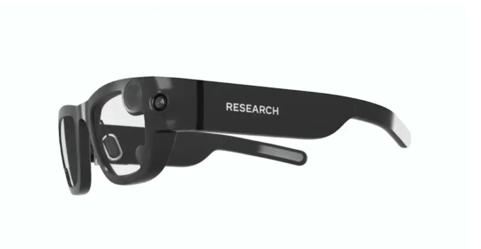

Arpitha Vinod arpithav@teenhacksli.com
If you start seeing people in public with chunky glasses that look like they are monitoring you—don’t worry, that's just Facebook’s new research project: Project Aria . Facebook is currently working on developing augmented reality glasses that work as efficiently as smartphones. To help develop this idea, the company is embarking on a research project with a glass prototype called Project Aria.
So why AR glasses specifically? Facebook was originally deciding between a smart hat or bracelet, but ultimately chose glasses because “if you really want a system that is socially aware in a sense , it perceives the space like people do, you’ve got to look at it from a human point of view ”, says Renzo De Nardi, the Technical Lead at Project Aria. The glasses would help humans better by seeing the world as humans see them, especially with navigation features . It also has a camera and internet access. Currently, the prototype is sensor-rich and soaks up everything it hears and sees with cameras facing in and out to see where your eyes are pointed , coupled with an accelerometer to determine orientation.
However, before the glasses officially launch into the real world, a lot of concerns about privacy and Facebook’s policy model must be answered. As a result, Facebook is sending people part of their research team to go out in public and Facebook campuses to wear these glasses. This project, Project Aria, will help the glasses map out the world by taking pictures to see the environment in real world conditions, both indoor and outdoor. This project is similar to the mapping car that Google used when it was figuring out its street view feature of Google Maps.
But how creepy is it that some random employee at Facebook could take a picture of you? Well fortunately, Andrew Bosworth—head of Facebook’s Reality Labs—said that all Project Aria participants are required to wear a Facebook research shirt , and the glasses will have the words “Research” written with bold white letters. Additionally, all of the data collected will be reviewed and faces of people and license plates will be blurred . The main purpose is to gather data for AI training and AR perception systems, assess the public’s perception of the glasses, and to answer major questions about privacy, ethical, and technical concerns . With Project Aria, Facebook hopes that their technology will help users see the world in a new way as they release new prototypes of their cutting-edge AR glasses.